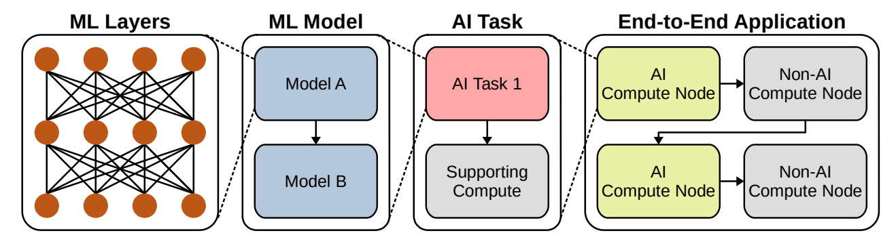
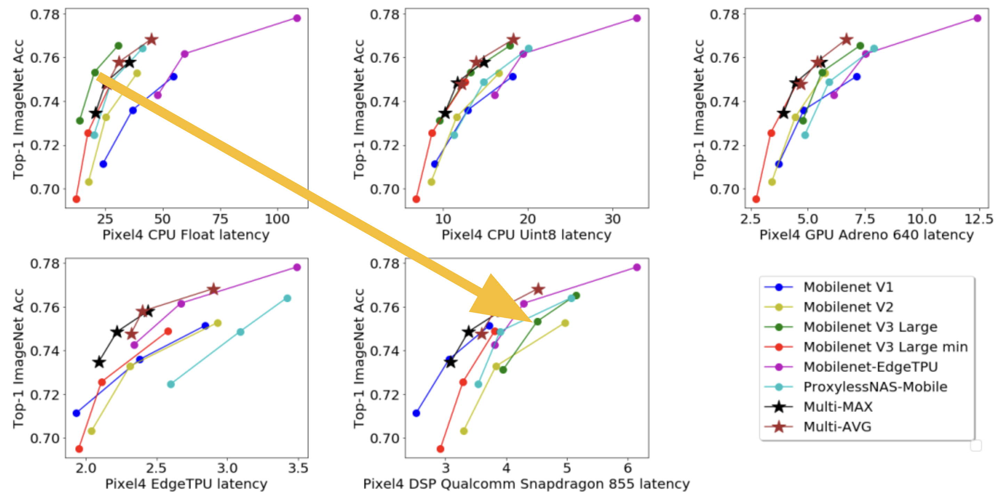

12 Benchmarking AI
Benchmarking is a critical part of developing and deploying machine learning systems, especially for TinyML applications. Benchmarks allow developers to measure and compare the performance of different model architectures, training procedures, and deployment strategies. This provides key insights into which approaches work best for the problem at hand and the constraints of the deployment environment.
This chapter will provide an overview of popular ML benchmarks, best practices for benchmarking, and how to use benchmarks to improve model development and system performance. It aims to provide developers with the right tools and knowledge to effectively benchmark and optimize their systems, especially for TinyML systems.
Understand the purpose and goals of benchmarking AI systems, including performance assessment, resource evaluation, validation, and more.
Learn about the different types of benchmarks - micro, macro, and end-to-end - and their role in evaluating different aspects of an AI system.
Become familiar with the key components of an AI benchmark, including datasets, tasks, metrics, baselines, reproducibility rules, and more.
Understand the distinction between training and inference, and how each phase warrants specialized ML systems benchmarking.
Learn about system benchmarking concepts like throughput, latency, power, and computational efficiency.
Appreciate the evolution of model benchmarking from accuracy to more holistic metrics like fairness, robustness and real-world applicability.
Recognize the growing role of data benchmarking in evaluating issues like bias, noise, balance and diversity.
Understand the limitations of evaluating models, data, and systems in isolation, and the emerging need for integrated benchmarking.
12.1 Introduction
Benchmarking provides the essential measurements needed to drive progress in machine learning and to truly understand system performance. As the physicist Lord Kelvin famously said, “To measure is to know.” Benchmarks give us the ability to know the capabilities of different models, software, and hardware quantitatively. They allow ML developers to measure the inference time, memory usage, power consumption, and other metrics that characterize a system. Moreover, benchmarks create standardized processes for measurement, enabling fair comparisons across different solutions.
When benchmarks are maintained over time, they become instrumental in capturing progress across generations of algorithms, datasets, and hardware. The models and techniques that set new records on ML benchmarks from one year to the next demonstrate tangible improvements in what’s possible for on-device machine learning. By using benchmarks to measure, ML practitioners can know the real-world capabilities of their systems and have confidence that each step reflects genuine progress towards the state-of-the-art.
Benchmarking has several important goals and objectives that guide its implementation for machine learning systems.
Performance assessment. This involves evaluating key metrics like the speed, accuracy, and efficiency of a given model. For instance, in a TinyML context, it is crucial to benchmark how quickly a voice assistant can recognize commands, as this evaluates real-time performance.
Resource evaluation. This means assessing the model’s impact on critical system resources including battery life, memory usage, and computational overhead. A relevant example is comparing the battery drain of two different image recognition algorithms running on a wearable device.
Validation and verification. Benchmarking helps ensure the system functions correctly and meets specified requirements. One way is by checking the accuracy of an algorithm, like a heart rate monitor on a smartwatch, against readings from medical-grade equipment as a form of clinical validation.
Competitive analysis. This enables comparing solutions against competing offerings in the market. For example, benchmarking a custom object detection model versus common TinyML benchmarks like MobileNet and Tiny-YOLO.
Credibility. Accurate benchmarks uphold the credibility of AI solutions and the organizations that develop them. They demonstrate a commitment to transparency, honesty, and quality, which is essential in building trust with users and stakeholders.
Regulation and Standardization. As the AI industry continues to grow, there is an increasing need for regulation and standardization to ensure that AI solutions are safe, ethical, and effective. Accurate and reliable benchmarks are an essential component of this regulatory framework, as they provide the data and evidence needed to assess compliance with industry standards and legal requirements.
This chapter will cover the 3 types of benchmarks in AI, the standard metrics, tools, and techniques designers use to optimize their systems, and the challenges and trends in benchmarking.
12.2 Historical Context
12.2.1 Standard Benchmarks
The evolution of benchmarks in computing vividly illustrates the industry’s relentless pursuit of excellence and innovation. In the early days of computing during the 1960s and 1970s, benchmarks were rudimentary and designed for mainframe computers. For example, the Whetstone benchmark, named after the Whetstone ALGOL compiler, was one of the first standardized tests to measure floating-point arithmetic performance of a CPU. These pioneering benchmarks prompted manufacturers to refine their architectures and algorithms to achieve better benchmark scores.
The 1980s marked a significant shift with the rise of personal computers. As companies like IBM, Apple, and Commodore competed for market share, and so benchmarks became critical tools to enable fair competition. The SPEC CPU benchmarks, introduced by the System Performance Evaluation Cooperative (SPEC), established standardized tests allowing objective comparisons between different machines. This standardization created a competitive environment, pushing silicon manufacturers and system creators to enhance their hardware and software offerings continually.
With the 1990s came the era of graphics-intensive applications and video games. The need for benchmarks to evaluate graphics card performance led to the creation of 3DMark by Futuremark. As gamers and professionals sought high-performance graphics cards, companies like NVIDIA and AMD were driven to rapid innovation, leading to major advancements in GPU technology like programmable shaders.
The 2000s saw a surge in mobile phones and portable devices like tablets. With portability came the challenge of balancing performance and power consumption. Benchmarks like MobileMark by BAPCo evaluated not just speed but also battery life. This drove companies to develop more energy-efficient System-on-Chips (SOCs), leading to the emergence of architectures like ARM that prioritized power efficiency.
The recent decade’s focus has shifted towards cloud computing, big data, and artificial intelligence. Cloud services providers like Amazon Web Services and Google Cloud compete on performance, scalability, and cost-effectiveness. Tailored cloud benchmarks like CloudSuite have become essential, driving providers to optimize their infrastructure for better services.
12.2.2 Custom Benchmarks
In addition to industry-standard benchmarks, there are custom benchmarks that are specifically designed to meet the unique requirements of a particular application or task. They are tailored to the specific needs of the user or developer, ensuring that the performance metrics are directly relevant to the intended use of the AI model or system. Custom benchmarks can be created by individual organizations, researchers, or developers, and are often used in conjunction with industry standard benchmarks to provide a comprehensive evaluation of AI performance.
For example, a hospital could develop a benchmark to assess an AI model for predicting patient readmission. This benchmark would incorporate metrics relevant to the hospital’s patient population like demographics, medical history, and social factors. Similarly, a financial institution’s fraud detection benchmark could focus on identifying fraudulent transactions accurately while minimizing false positives. In automotive, an autonomous vehicle benchmark may prioritize performance in diverse conditions, responding to obstacles, and safety. Retailers could benchmark recommendation systems using click-through rate, conversion rate, and customer satisfaction. Manufacturing companies might benchmark quality control systems on defect identification, efficiency, and waste reduction. In each industry, custom benchmarks provide organizations with evaluation criteria tailored to their unique needs and context. This allows for more meaningful assessment of how well AI systems meet requirements.
The advantage of custom benchmarks lies in their flexibility and relevance. They can be designed to test specific aspects of performance that are critical to the success of the AI solution in its intended application. This allows for a more targeted and accurate assessment of the AI model or system’s capabilities. Custom benchmarks also provide valuable insights into the performance of AI solutions in real-world scenarios, which can be crucial for identifying potential issues and areas for improvement.
In AI, benchmarks play a crucial role in driving progress and innovation. While benchmarks have long been used in computing, their application to machine learning is relatively recent. AI-focused benchmarks aim to provide standardized metrics to evaluate and compare the performance of different algorithms, model architectures, and hardware platforms.
12.2.3 Community Consensus
A key prerogative for any benchmark to be impactful is that it must reflect the shared priorities and values of the broader research community. Benchmarks designed in isolation risk failing to gain acceptance if they overlook key metrics considered important by leading groups. Through collaborative development with open participation from academic labs, companies, and other stakeholders, benchmarks can incorporate collective input on critical capabilities worth measuring. This helps ensure the benchmarks evaluate aspects the community agrees are essential to advance the field. The process of reaching alignment on tasks and metrics itself supports converging on what matters most.
Furthermore, benchmarks published with broad co-authorship from respected institutions carry authority and validity that convinces the community to adopt them as trusted standards. Benchmarks perceived as biased by particular corporate or institutional interests breed skepticism. Ongoing community engagement through workshops and challenges is also key after initial release, and that is what, for instance, led to the success of ImageNet. As research rapidly progresses, collective participation enables continual refinement and expansion of benchmarks over time.
Finally, community-developed benchmarks released with open access accelerate adoption and consistent implementation. Shared open source code, documentation, models and infrastructure lower barriers for groups to benchmark solutions on an equal footing using standardized implementations. This consistency is critical for fair comparisons. Without coordination, labs and companies may implement benchmarks differently, reducing result reproducibility.
Community consensus brings benchmarks lasting relevance while fragmentation causes confusion. Through collaborative development and transparent operation, benchmarks can become authoritative standards for tracking progress. Several of the benchmarks that we discuss in this chapter were developed and built by the community, for the community, and that is what ultimately led to their success.
12.3 AI Benchmarks: System, Model, and Data
As AI systems grow in complexity and ubiquity, the need for comprehensive benchmarking becomes paramount. Within this context, benchmarks are often classified into three primary categories: Hardware, Model, and Data. Let’s delve into why each of these buckets is essential and the significance of evaluating AI from these three distinct dimensions:
12.3.1 System Benchmarks
AI computations, especially those in deep learning, are resource-intensive. The hardware on which these computations run plays an important role in determining the speed, efficiency, and scalability of AI solutions. Consequently, hardware benchmarks help evaluate the performance of CPUs, GPUs, TPUs, and other accelerators in the context of AI tasks. By understanding hardware performance, developers can make informed choices about which hardware platforms are best suited for specific AI applications. Furthermore, hardware manufacturers use these benchmarks to identify areas for improvement, driving innovation in AI-specific chip designs.
12.3.2 Model Benchmarks
The architecture, size, and complexity of AI models vary widely. Different models have different computational demands and offer varying levels of accuracy and efficiency. Model benchmarks help us assess the performance of various AI architectures on standardized tasks. They provide insights into the speed, accuracy, and resource demands of different models. By benchmarking models, researchers can identify best-performing architectures for specific tasks, guiding the AI community towards more efficient and effective solutions. Additionally, these benchmarks aid in tracking the progress of AI research, showcasing advancements in model design and optimization.
12.3.3 Data Benchmarks
AI, particularly machine learning, is inherently data-driven. The quality, size, and diversity of data influence the training efficacy and generalization capability of AI models. Data benchmarks focus on the datasets used in AI training and evaluation. They provide standardized datasets that the community can use to train and test models, ensuring a level playing field for comparisons. Moreover, these benchmarks highlight challenges in data quality, diversity, and representation, pushing the community to address biases and gaps in AI training data. By understanding data benchmarks, researchers can also gauge how models might perform in real-world scenarios, ensuring robustness and reliability.
In the remainder of the sections, we will go through each of these benchmark types. The focus will be an in-depth exploration of system benchmarks, as these are critical to understanding and advancing machine learning system performance. We will cover model and data benchmarks briefly for a comprehensive perspective, but the emphasis and majority of the content will be devoted to system benchmarks.
12.4 System Benchmarking
12.4.1 Granularity
Machine learning system benchmarking provides a structured and systematic approach to assess how well a system is performing across various dimensions. Given the complexity of ML systems, we can dissect their performance through different levels of granularity and obtain a comprehensive view of the system’s efficiency, identify potential bottlenecks, and pinpoint areas for improvement. To this end, there are various types of benchmarks that have evolved over the years and continue to persist.

Micro Benchmarks
Micro-benchmarks in AI are specialized, focusing on the evaluation of distinct components or specific operations within a broader machine learning process. These benchmarks zero in on individual tasks, offering insights into the computational demands of a particular neural network layer, the efficiency of a unique optimization technique, or the throughput of a specific activation function. For instance, practitioners might use micro-benchmarks to measure the computational time required by a convolutional layer in a deep learning model or to evaluate the speed of data preprocessing that feeds data into the model. Such granular assessments are instrumental in fine-tuning and optimizing discrete aspects of AI models, ensuring that each component operates at its peak potential.
These types of microbenchmarks include that zoom into very specific operations or components of the AI pipeline, such as the following:
- Tensor Operations: Libraries like cuDNN (by NVIDIA) often have benchmarks to measure the performance of individual tensor operations, such as convolutions or matrix multiplications, which are foundational to deep learning computations.
- Activation Functions: Benchmarks that measure the speed and efficiency of various activation functions like ReLU, Sigmoid, or Tanh in isolation.
- Layer Benchmarks: Evaluations of the computational efficiency of distinct neural network layers, such as a LSTM layer or a Transformer block, when operating on standardized input sizes.
Example: DeepBench, introduced by Baidu, is a good example of something that asseses the above. DeepBench assesses the performance of basic operations in deep learning models, providing insights into how different hardware platforms handle neural network training and inference.
Macro Benchmarks
Macro-benchmarks provide a holistic view, assessing the end-to-end performance of entire machine learning models or comprehensive AI systems. Rather than focusing on individual operations, macro-benchmarks evaluate the collective efficacy of models under real-world scenarios or tasks. For example, a macro-benchmark might assess the complete performance of a deep learning model undertaking image classification on a dataset like ImageNet. This includes gauging accuracy, computational speed, and resource consumption. Similarly, one might measure the cumulative time and resources needed to train a natural language processing model on extensive text corpora or evaluate the performance of an entire recommendation system, from data ingestion to final user-specific outputs.
Examples: These benchmarks evaluate the AI model:
[MLPerf Inference][https://github.com/mlcommons/inference](Reddi et al. (2020)): An industry-standard set of benchmarks for measuring the performance of machine learning software and hardware. MLPerf has a suite of dedicated benchmarks for specific scales, such as MLPerf Mobile for mobile class devices and MLPerf Tiny, which focuses on microcontrollers and other resource-constrained devices.
EEMBC’s MLMark: A benchmarking suite for evaluating the performance and power efficiency of embedded devices running machine learning workloads. This benchmark provides insights into how different hardware platforms handle tasks like image recognition or audio processing.
[AI-Benchmark][https://ai-benchmark.com/](Ignatov et al. (2019)): A benchmarking tool designed for Android devices, it valuates the performance of AI tasks on mobile devices, encompassing various real-world scenarios like image recognition, face parsing, and optical character recognition.
End-to-end Benchmarks
End-to-End Benchmarks provide an all-inclusive evaluation that extends beyond the boundaries of the AI model itself. Instead of focusing solely on the computational efficiency or accuracy of a machine learning model, these benchmarks encompass the entire pipeline of an AI system. This includes initial data pre-processing, the core model’s performance, post-processing of the model’s outputs, and even other integral components like storage and network interactions.
Data pre-processing is the first stage in many AI systems, transforming raw data into a format suitable for model training or inference. The efficiency, scalability, and accuracy of these pre-processing steps are vital for the overall system’s performance. End-to-end benchmarks assess this phase, ensuring that data cleaning, normalization, augmentation, or any other transformation process doesn’t become a bottleneck.
The post-processing phase also takes center stage. This involves interpreting the model’s raw outputs, possibly converting scores into meaningful categories, filtering results, or even integrating with other systems. In real-world applications, this phase is crucial for delivering actionable insights, and end-to-end benchmarks ensure it’s both efficient and effective.
Beyond the core AI operations, other system components play an important role in the overall performance and user experience. Storage solutions, be it cloud-based, on-premises, or hybrid, can significantly impact data retrieval and storage times, especially with vast AI datasets. Similarly, network interactions, vital for cloud-based AI solutions or distributed systems, can become performance bottlenecks if not optimized. End-to-end benchmarks holistically evaluate these components, ensuring that the entire system, from data retrieval to final output delivery, operates seamlessly.
To date, there are no public, end to end benchmarks that take into account the role of data storage, network and compute performance. Arguably, MLPerf Training and Inference, come close to the idea of an end to end benchmark but they are exclusively focused on ML model performance and do not represent real world deployment scenarios of how models are used in the field. Nonetheless, they provide a very useful signal that helps assess AI system performance.
Given the inherent specificity of end-to-end benchmarking, it is typically performed internally at a company by instrumenting real production deployments of AI. This allows engineers to have a realistic understanding and breakdown of the performance, but given the sensitivity and specificity of the information, it is rarely reported outside of the company.
Understanding the Trade-offs
Different issues arise at different stages of an AI system. Micro-benchmarks help in fine-tuning individual components, macro-benchmarks aid in refining model architectures or algorithms, and end-to-end benchmarks guide the optimization of the entire workflow. By understanding where a problem lies, developers can apply targeted optimizations.
Moreover, while individual components of an AI system might perform optimally in isolation, bottlenecks can emerge when they interact. End-to-end benchmarks, in particular, are crucial to ensure that the entire system, when operating collectively, meets desired performance and efficiency standards.
Finally, by discerning where performance bottlenecks or inefficiencies lie, organizations can make informed decisions on where to allocate resources. For instance, if micro-benchmarks reveal inefficiencies in specific tensor operations, investments can be directed towards specialized hardware accelerators. Conversely, if end-to-end benchmarks indicate data retrieval issues, investments might be channeled towards better storage solutions.
12.4.2 Benchmark Components
At its core, an AI benchmark is more than just a test or a score; it’s a comprehensive evaluation framework. To understand this in-depth, let’s break down the typical components that go into an AI benchmark.
Standardized Datasets
Datasets serve as the foundation for most AI benchmarks. They provide a consistent set of data on which models are trained and evaluated, ensuring a level playing field for comparisons.
Example: ImageNet, a large-scale dataset containing millions of labeled images spanning thousands of categories, is a popular benchmarking standard for image classification tasks.
Pre-defined Tasks
A benchmark should have a clear objective or task that models aim to achieve. This task defines the problem the AI system is trying to solve.
Example: For natural language processing benchmarks, tasks might include sentiment analysis, named entity recognition, or machine translation.
Evaluation Metrics
Once a task is defined, benchmarks require metrics to quantify performance. These metrics offer objective measures to compare different models or systems.
In classification tasks, metrics like accuracy, precision, recall, and F1 score are commonly used. For regression tasks, mean squared error or mean absolute error might be employed.
Baseline Models
Benchmarks often include baseline models or reference implementations. These serve as starting points or minimum performance standards against which new models or techniques can be compared.
Example: In many benchmark suites, simple models like linear regression or basic neural networks serve as baselines to provide context for more complex model evaluations.
Hardware and Software Specifications
Given the variability introduced by different hardware and software configurations, benchmarks often specify or document the hardware and software environments in which tests are conducted.
Example: An AI benchmark might note that evaluations were conducted on an NVIDIA Tesla V100 GPU using TensorFlow v2.4.
Environmental Conditions
As external factors can influence benchmark results, it’s essential to either control or document conditions like temperature, power source, or system background processes.
Example: Mobile AI benchmarks might specify that tests were conducted at room temperature with devices plugged into a power source to eliminate battery-level variances.
Reproducibility Rules
To ensure benchmarks are credible and can be replicated by others in the community, they often include detailed protocols, covering everything from random seeds used to exact hyperparameters.
Example: A benchmark for a reinforcement learning task might detail the exact training episodes, exploration-exploitation ratios, and reward structures used.
Result Interpretation Guidelines
Beyond raw scores or metrics, benchmarks often provide guidelines or context to interpret results, helping practitioners understand the broader implications.
Example: A benchmark might highlight that while Model A scored higher than Model B in accuracy, Model B offers better real-time performance, making it more suitable for time-sensitive applications.
12.4.3 Training vs. Inference
The development life cycle of a machine learning model involves two critical phases - training and inference. Training is the process of learning patterns from data to create the model. Inference refers to the model making predictions on new unlabeled data. Both phases play indispensable yet distinct roles. Consequently, each phase warrants rigorous benchmarking to evaluate performance metrics like speed, accuracy, and computational efficiency.
Benchmarking the training phase provides insights into how different model architectures, hyperparameter values, and optimization algorithms impact the time and resources needed to train the model. For instance, benchmarking shows how neural network depth affects training time on a given dataset. Benchmarking also reveals how hardware accelerators like GPUs and TPUs can speed up training.
On the other hand, benchmarking inference evaluates model performance in real-world conditions after deployment. Key metrics include latency, throughput, memory footprint, and power consumption. Inference benchmarking determines if an model meets the requirements of its target application regarding response time and device constraints, which is typically the focus of TinyML but we will discuss these broadly to make sure we have a general understanding.
12.4.4 Training Benchmarks
Training represents the phase where raw data is processed and ingested by the system to adjust and refine its parameters. Therefore, it is not just an algorithmic activity but also involves system-level considerations, including data pipelines, storage, computing resources, and orchestration mechanisms. The goal is to ensure that the ML system can efficiently learn from data, optimizing both the model’s performance and the system’s resource utilization.
Purpose
From an ML systems perspective, training benchmarks evaluate how well the system scales with increasing data volumes and computational demands. It’s about understanding the interplay between hardware, software, and the data pipeline in the training process.
Consider a distributed ML system designed to train on vast datasets, like those used in large-scale e-commerce product recommendations. A training benchmark would assess how efficiently the system scales across multiple nodes, how it manages data sharding, and how it handles failures or node drop-offs during the training process.
Training benchmarks evaluate CPU, GPU, memory, and network utilization during the training phase, guiding system optimizations. When training a model in a cloud-based ML system, it’s crucial to understand how resources are being utilized. Are GPUs being fully leveraged? Is there unnecessary memory overhead? Benchmarks can highlight bottlenecks or inefficiencies in resource utilization, leading to cost savings and performance improvements.
Training an ML model is contingent on the timely and efficient delivery of data. Benchmarks in this context would also assess the efficiency of data pipelines, data preprocessing speed, and storage retrieval times. For real-time analytics systems, like those used in fraud detection, the speed at which training data is ingested, preprocessed, and fed into the model can be critical. Benchmarks would evaluate the latency of data pipelines, the efficiency of storage systems (like SSDs vs. HDDs), and the speed of data augmentation or transformation tasks.
Metrics
Training metrics, when viewed from a systems perspective, offer insights that transcend the conventional algorithmic performance indicators. These metrics not only measure the model’s learning efficacy but also gauge the efficiency, scalability, and robustness of the entire ML system during the training phase. Let’s delve deeper into these metrics and their significance.
The following metrics are often considered important:
Training Time: The time taken to train a model from scratch until it reaches a satisfactory performance level. It is a direct measure of the computational resources required to train a model. For example, [Google’s BERT][https://arxiv.org/abs/1810.04805](Devlin et al. (2019)) model is a natural language processing model that requires several days to train on a massive corpus of text data using multiple GPUs. The long training time is a significant challenge in terms of resource consumption and cost.
Scalability: How well the training process can handle increases in data size or model complexity. Scalability can be assessed by measuring training time, memory usage, and other resource consumption as data size or model complexity increases. [OpenAI’s GPT-3][https://arxiv.org/abs/2005.14165](Brown et al. (2020)) model has 175 billion parameters, making it one of the largest language models in existence. Training GPT-3 required extensive engineering efforts to scale up the training process to handle the massive model size. This involved the use of specialized hardware, distributed training, and other techniques to ensure that the model could be trained efficiently.
Resource Utilization: The extent to which the training process utilizes available computational resources such as CPU, GPU, memory, and disk I/O. High resource utilization can indicate an efficient training process, while low utilization can suggest bottlenecks or inefficiencies. For instance, training a convolutional neural network (CNN) for image classification requires significant GPU resources. Utilizing multi-GPU setups and optimizing the training code for GPU acceleration can greatly improve resource utilization and training efficiency.
Memory Consumption: The amount of memory used by the training process. Memory consumption can be a limiting factor for training large models or datasets. As an example, Google researchers faced significant memory consumption challenges when training BERT. The model has hundreds of millions of parameters, which require large amounts of memory to store. The researchers had to develop techniques to reduce memory consumption, such as gradient checkpointing and model parallelism.
Energy Consumption: The amount of energy consumed during the training process. As machine learning models become larger and more complex, energy consumption has become an important consideration. Training large machine learning models can consume significant amounts of energy, leading to a large carbon footprint. For instance, the training of OpenAI’s GPT-3 was estimated to have a carbon footprint equivalent to traveling by car for 700,000 kilometers.
Throughput: The number of training samples processed per unit time. Higher throughput generally indicates a more efficient training process. When training a recommendation system for an e-commerce platform, the throughput is an important metric to consider. A high throughput ensures that the model can process large volumes of user interaction data in a timely manner, which is crucial for maintaining the relevance and accuracy of the recommendations. But it’s also important to understand how to balance throughput with latency bounds. Therefore, often there is a latency-bounded throughput constraint that’s imposed on service-level agreements for datacenter application deployments.
Cost: The cost of training a model, which can include both computational and human resources. Cost is an important factor when considering the practicality and feasibility of training large or complex models. The cost of training large language models like GPT-3 is estimated to be in the range of millions of dollars. This cost includes computational resources, electricity, and human resources required for model development and training.
Fault Tolerance and Robustness: The ability of the training process to handle failures or errors without crashing or producing incorrect results. This is important for ensuring the reliability of the training process. In a real-world scenario, where a machine learning model is being trained on a distributed system, network failures or hardware malfunctions can occur. In recent years, for instance, it has become abundantly clear that faults that arise from silent data corruption have emerged as a major issue. A fault-tolerant and robust training process can recover from such failures without compromising the integrity of the model.
Ease of Use and Flexibility: The ease with which the training process can be set up and used, as well as its flexibility in handling different types of data and models. In companies like Google, efficiency can sometimes be measured in terms of the number of Software Engineer (SWE) years saved since that translates directly to impact. Ease of use and flexibility can reduce the time and effort required to train a model. TensorFlow and PyTorch are popular machine learning frameworks that provide user-friendly interfaces and flexible APIs for building and training machine learning models. These frameworks support a wide range of model architectures and are equipped with tools that simplify the training process.
Reproducibility: The ability to reproduce the results of the training process. Reproducibility is important for verifying the correctness and validity of a model. However, there are often variations due to stochastic network characteristics and this makes it hard to reproduce the precise behavior of applications being trained, and this can present a challenge for benchmarking.
By benchmarking for these types of metrics, we can obtain a comprehensive view of the performance and efficiency of the training process from a systems’ perspective, which can help identify areas for improvement and ensure that resources are used effectively.
Tasks
Selecting a handful of representative tasks for benchmarking machine learning systems is challenging because machine learning is applied to a diverse range of domains, each with its own unique characteristics and requirements. Here are some of the challenges faced in selecting representative tasks:
- Diversity of Applications: Machine learning is used in numerous fields such as healthcare, finance, natural language processing, computer vision, and many more. Each field has specific tasks that may not be representative of other fields. For example, image classification tasks in computer vision may not be relevant to financial fraud detection.
- Variability in Data Types and Quality: Different tasks require different types of data, such as text, images, videos, or numerical data. The quality and availability of data can vary greatly between tasks, making it difficult to select tasks that are representative of the general challenges faced in machine learning.
- Task Complexity and Difficulty: The complexity of tasks varies greatly, with some tasks being relatively straightforward, while others are highly complex and require sophisticated models and techniques. Selecting representative tasks that cover the range of complexities encountered in machine learning is a challenge.
- Ethical and Privacy Concerns: Some tasks may involve sensitive or private data, such as medical records or personal information. These tasks may have ethical and privacy concerns that need to be addressed, which can make them less suitable as representative tasks for benchmarking.
- Scalability and Resource Requirements: Different tasks may have different scalability and resource requirements. Some tasks may require extensive computational resources, while others can be performed with minimal resources. Selecting tasks that are representative of the general resource requirements in machine learning is difficult.
- Evaluation Metrics: The metrics used to evaluate the performance of machine learning models vary between tasks. Some tasks may have well-established evaluation metrics, while others may lack clear or standardized metrics. This can make it challenging to compare performance across different tasks.
- Generalizability of Results: The results obtained from benchmarking on a specific task may not be generalizable to other tasks. This means that the performance of a machine learning system on a selected task may not be indicative of its performance on other tasks.
It is important to carefully consider these factors when designing benchmarks to ensure that they are meaningful and relevant to the diverse range of tasks encountered in machine learning.
Benchmarks
Here are some original works that laid the fundamental groundwork for developing systematic benchmarks for training machine learning systems.
MLPerf is a suite of benchmarks designed to measure the performance of machine learning hardware, software, and services. The MLPerf Training benchmark (Mattson et al. 2020a) focuses on the time it takes to train models to a target quality metric. It includes a diverse set of workloads, such as image classification, object detection, translation, and reinforcement learning.
Metrics:
- Training time to target quality
- Throughput (examples per second)
- Resource utilization (CPU, GPU, memory, disk I/O)
DAWNBench (Coleman et al. 2019) is a benchmark suite that focuses on end-to-end deep learning training time and inference performance. It includes common tasks such as image classification and question answering.
Metrics:
- Time to train to target accuracy
- Inference latency
- Cost (in terms of cloud compute and storage resources)
Fathom (Adolf et al. 2016) is a benchmark from Harvard University that includes a diverse set of workloads to evaluate the performance of deep learning models. It includes common tasks such as image classification, speech recognition, and language modeling.
Metrics:
- Operations per second (to measure computational efficiency)
- Time to completion for each workload
- Memory bandwidth
Example Use Case
Consider a scenario where we want to benchmark the training of an image classification model on a specific hardware platform.
- Task: The task is to train a convolutional neural network (CNN) for image classification on the CIFAR-10 dataset.
- Benchmark: We can use the MLPerf Training benchmark for this task. It includes an image classification workload that is relevant to our task.
- Metrics: We will measure the following metrics:
- Training time to reach a target accuracy of 90%.
- Throughput in terms of images processed per second.
- GPU and CPU utilization during training.
By measuring these metrics, we can assess the performance and efficiency of the training process on the selected hardware platform. This information can then be used to identify potential bottlenecks or areas for improvement.
12.4.5 Inference Benchmarks
Inference in machine learning refers to the process of using a trained model to make predictions on new, unseen data. It is the phase where the model applies its learned knowledge to solve the problem it was designed for, such as classifying images, recognizing speech, or translating text.
Purpose
When we build machine learning models, our ultimate goal is to deploy them in real-world applications where they can provide accurate and reliable predictions on new, unseen data. This process of using a trained model to make predictions is known as inference. The real-world performance of a machine learning model can differ significantly from its performance on training or validation datasets, which makes benchmarking inference a crucial step in the development and deployment of machine learning models.
Benchmarking inference allows us to evaluate how well a machine learning model performs in real-world scenarios. This evaluation ensures that the model is practical and reliable when deployed in applications, providing a more comprehensive understanding of the model’s behavior with real data. Additionally, benchmarking can help identify potential bottlenecks or limitations in the model’s performance. For example, if a model takes too long to make a prediction, it may be impractical for real-time applications such as autonomous driving or voice assistants.
Resource efficiency is another critical aspect of inference, as it can be computationally intensive and require significant memory and processing power. Benchmarking helps ensure that the model is efficient in terms of resource usage, which is particularly important for edge devices with limited computational capabilities, such as smartphones or IoT devices. Moreover, benchmarking allows us to compare the performance of our model with competing models or previous versions of the same model. This comparison is essential for making informed decisions about which model to deploy in a specific application.
Finally, ensuring that the model’s predictions are not only accurate but also consistent across different data points is vital. Benchmarking helps verify the model’s accuracy and consistency, ensuring that it meets the application’s requirements. It also assesses the robustness of the model, ensuring that it can handle real-world data variability and still make accurate predictions.
Metrics
Accuracy: Accuracy is one of the most vital metrics when benchmarking machine learning models, quantifying the proportion of correct predictions made by the model compared to the true values or labels. For example, in the case of a spam detection model that can correctly classify 95 out of 100 email messages as spam or not spam, the accuracy of this model would be calculated as 95%.
Latency: Latency is a performance metric that calculates the time lag or delay occurring between the receipt of an input and the production of the corresponding output by the machine learning system. An example that clearly depicts latency is a real-time translation application; if there exists a half-second delay from the moment a user inputs a sentence to the time the translated text is displayed by the app, then the system’s latency is 0.5 seconds.
Latency-Bounded Throughput: Latency-bounded throughput is a valuable metric that combines the aspects of latency and throughput, measuring the maximum throughput of a system while still meeting a specified latency constraint. For example, in a video streaming application that utilizes a machine learning model to automatically generate and display subtitles, latency-bounded throughput would measure how many video frames the system can process per second (throughput) while ensuring that the subtitles are displayed with no more than a 1-second delay (latency). This metric is particularly important in real-time applications where meeting latency requirements is crucial to the user experience.
Throughput: Throughput assesses the system’s capacity by measuring the total number of inferences or predictions a machine learning model can handle within a specific unit of time. Consider a speech recognition system that employs a Recurrent Neural Network (RNN) as its underlying model; if this system is capable of processing and understanding 50 different audio clips in a minute, then its throughput rate stands at 50 clips per minute.
Inference Time: Inference time is a crucial metric that measures the duration a machine learning system, such as a Convolutional Neural Network (CNN) used in image recognition tasks, takes to process an input and generate a prediction or output. For instance, if a CNN takes approximately 2 milliseconds to accurately identify and label a cat within a given photo, then its inference time is said to be 2 milliseconds.
Energy Efficiency: Energy efficiency is a metric that determines the amount of energy consumed by the machine learning model to perform a single inference. A prime example of this would be a natural language processing model built on a Transformer network architecture; if it utilizes 0.1 Joules of energy to translate a sentence from English to French, its energy efficiency is measured at 0.1 Joules per inference.
Memory Usage: Memory usage quantifies the volume of RAM needed by a machine learning model to carry out inference tasks. A relevant example to illustrate this would be a face recognition system that is based on a CNN; if such a system requires 150 MB of RAM to process and recognize faces within an image, then its memory usage is 150 MB.
Tasks
By and large, the challenges in picking representative tasks for benchmarking inference machine learning systems are somewhat of the same taxonomy as what we have provided for training. Nevertheless, to be pedantic, let’s discuss those in the context of inference machine learning systems.
Diversity of Applications: Inference machine learning is employed across numerous domains such as healthcare, finance, entertainment, security, and more. Each domain has its unique tasks, and what’s representative in one domain might not be in another. For example, an inference task for predicting stock prices in the financial domain might not be representative of image recognition tasks in the medical domain.
Variability in Data Types: Different inference tasks require different types of data – text, images, videos, numerical data, etc. Ensuring that benchmarks address the wide variety of data types used in real-world applications is challenging. For example, voice recognition systems process audio data, which is vastly different from the visual data processed by facial recognition systems.
Task Complexity: The complexity of inference tasks can differ immensely, from basic classification tasks to intricate tasks requiring state-of-the-art models. For example, differentiating between two categories (binary classification) is typically simpler than detecting hundreds of object types in a crowded scene.
Real-time Requirements: Some applications demand immediate or real-time responses, while others may allow for some delay. In autonomous driving, real-time object detection and decision-making are paramount, whereas a recommendation engine for a shopping website might tolerate slight delays.
Scalability Concerns: Given the varied scale of applications, from edge devices to cloud-based servers, tasks must represent the diverse computational environments where inference occurs. For example, an inference task running on a smartphone’s limited resources is quite different from one running on a powerful cloud server.
Evaluation Metrics Diversity: Depending on the task, the metrics to evaluate performance can differ significantly. Finding a common ground or universally accepted metric for diverse tasks is a challenge. For example, precision and recall might be vital for a medical diagnosis task, whereas throughput (inferences per second) might be more crucial for video processing tasks.
Ethical and Privacy Concerns: Especially in sensitive areas like facial recognition or personal data processing, there are concerns related to ethics and privacy. These concerns can impact the selection and nature of tasks used for benchmarking. For example, using real-world facial data for benchmarking can raise privacy issues, whereas synthetic data might not replicate real-world challenges.
Hardware Diversity: With a wide range of devices from GPUs, CPUs, TPUs, to custom ASICs used for inference, ensuring that tasks are representative across varied hardware is challenging. For example, a task optimized for inference on a GPU might perform sub-optimally on an edge device.
Benchmarks
Here are some original works that laid the fundamental groundwork for developing systematic benchmarks for inference machine learning systems.
MLPerf Inference is a comprehensive suite of benchmarks that assess the performance of machine learning models during the inference phase. It encompasses a variety of workloads including image classification, object detection, and natural language processing, aiming to provide standardized and insightful metrics for evaluating different inference systems.
Metrics:
- Inference time
- Latency
- Throughput
- Accuracy
- Energy consumption
AI Benchmark is a benchmarking tool that evaluates the performance of AI and machine learning models on mobile devices and edge computing platforms. It includes tests for image classification, object detection, and natural language processing tasks, providing a detailed analysis of the inference performance on different hardware platforms.
Metrics:
- Inference time
- Latency
- Energy consumption
- Memory usage
- Throughput
OpenVINO™ toolkit provides a benchmark tool to measure the performance of deep learning models for a variety of tasks such as image classification, object detection, and facial recognition on Intel hardware. It offers detailed insights into the inference performance of the models on different hardware configurations.
Metrics:
- Inference time
- Throughput
- Latency
- CPU and GPU utilization
Example Use Case
Consider a scenario where we want to evaluate the inference performance of an object detection model on a specific edge device.
Task: The task is to perform real-time object detection on video streams, detecting and identifying objects such as vehicles, pedestrians, and traffic signs.
Benchmark: We can use the AI Benchmark for this task as it focuses on evaluating inference performance on edge devices, which is suitable for our scenario.
Metrics: We will measure the following metrics:
- Inference time to process each video frame
- Latency to generate the bounding boxes for detected objects
- Energy consumption during the inference process
- Throughput in terms of video frames processed per second
By measuring these metrics, we can assess the performance of the object detection model on the edge device and identify any potential bottlenecks or areas for optimization to enhance real-time processing capabilities.
12.4.6 Benchmark Example
In order to properly illustrate the components of a systems benchmark, we can look at the keyword spotting benchmark in MLPerf Tiny and explain the motivation behind each decision.
Task
Keyword spotting was selected as a task because it is a common usecase in TinyML that has been well established for years. Additionally the typical hardware used for keyword spotting differs substantially from the offerings of other benchmarks such as MLPerf Inference’s speech recognition task.
Dataset
[Google Speech Commands][https://www.tensorflow.org/datasets/catalog/speech_commands](Warden (2018)) was selected as the best dataset to represent the task. The dataset is well established in the research community and has permissive licensing which allows it to be easily used in a benchmark.
Model
The next core component is the model which will act as the primary workload for the benchmark. The model should be well established as a solution to the selected task and not necessarily the state of the art solution. The model selected is a simple depthwise seperable convolution model. This architecture is not the state of the art solution to the task, but it is well established and not designed for a specific hardware platform like many of the state of the art solutions. The benchmark also establishes a reference training recipe, despite being an inference benchmark, in order to be fully reproducible and transparent.
Metrics
Latency was selected as the primary metric for the benchmark, as keyword spotting systems need to react quickly to maintain user satisfaction. Additionally, given that TinyML systems are often battery powered, energy consumption is measured to ensure the hardware platform is efficient. The accuracy of the model is also measure to ensure that the optimizations applied by a submitter, such as quantization, don’t degrade the accuracy beyond a threshold.
Benchmark Harness
MLPerf Tiny uses EEMBCs EnergyRunner™ benchmark harness to load the inputs to the model and to isolate and measure the energy consumption of the device. When measuring energy consumption it’s critical to select a harness that is accurate at the expected power levels of the devices under test, and simple enough to not become a burden for participants of the benchmark.
Baseline Submission
Baseline submissions are critical for contextualizing results and acting as a reference point to help participants get started. The baseline submission should prioritize simplicity and readability over state of the art performance. The keyword spotting baseline uses a standard STM microcontroller as it’s hardware and [TensorFlow Lite for Microcontrollers][https://www.tensorflow.org/lite/microcontrollers](David et al. (2021)) as it’s inference framework.
12.4.7 Challenges and Limitations
While benchmarking provides a structured methodology for performance evaluation in complex domains like artificial intelligence and computing, the process also poses several challenges. If not properly addressed, these challenges can undermine the credibility and accuracy of benchmarking results. Some of the predominant difficulties faced in benchmarking include the following:
- Incomplete problem coverage - Benchmark tasks may not fully represent the problem space. For instance, common image classification datasets like CIFAR-10 have limited diversity in image types. Algorithms tuned for such benchmarks may fail to generalize well to real-world datasets.
- Statistical insignificance - Benchmarks must have enough trials and data samples to produce statistically significant results. For example, benchmarking an OCR model on only a few text scans may not adequately capture its true error rates.
- Limited reproducibility - Varying hardware, software versions, codebases and other factors can reduce reproducibility of benchmark results. MLPerf addresses this by providing reference implementations and environment specification.
- Misalignment with end goals - Benchmarks focusing only on speed or accuracy metrics may misalign with real-world objectives like cost and power efficiency. Benchmarks must reflect all critical performance axes.
- Rapid staleness - Due to the fast pace of advancements in AI and computing, benchmarks and their datasets can become outdated quickly. Maintaining up-to-date benchmarks is thus a persistent challenge.
But of all these, perhaps the most important challenge is dealing with benchmark engineering.
Hardware Lottery
The “hardware lottery” in benchmarking machine learning systems refers to the situation where the success or efficiency of a machine learning model is significantly influenced by the compatibility of the model with the underlying hardware (Chu et al. 2021). In other words, some models perform exceptionally well because they are a good fit for the particular characteristics or capabilities of the hardware on which they are run, rather than because they are intrinsically superior models. Unfortunately, the hardware used is often omitted from papers or given only brief mentions, making reproducing results difficult if not impossible.
For instance, certain machine learning models may be designed and optimized to take advantage of parallel processing capabilities of specific hardware accelerators, such as Graphics Processing Units (GPUs) or Tensor Processing Units (TPUs). As a result, these models might show superior performance when benchmarked on such hardware, compared to other models that are not optimized for the hardware.
For example, a 2018 paper introduced a new convolutional neural network architecture for image classification that achieved state-of-the-art accuracy on ImageNet. However, the paper only mentioned that the model was trained on 8 GPUs, without specifying the model, memory size, or other relevant details. A follow-up study tried to reproduce the results but found that training the same model on commonly available GPUs achieved 10% lower accuracy, even after hyperparameter tuning. The original hardware likely had far higher memory bandwidth and compute power. As another example, training times for large language models can vary drastically based on the GPUs used.
The “hardware lottery” can introduce challenges and biases in benchmarking machine learning systems, as the performance of the model is not solely dependent on the model’s architecture or algorithm, but also on the compatibility and synergies with the underlying hardware. This can make it difficult to fairly compare different models and to identify the best model based on its intrinsic merits. It can also lead to a situation where the community converges on models that are a good fit for the popular hardware of the day, potentially overlooking other models that might be superior but are not compatible with the current hardware trends.

Benchmark Engineering
Hardware lottery occurs when a machine learning model unintentionally performs exceptionally well or poorly on a specific hardware setup due to unforeseen compatibility or incompatibility. The model is not explicitly designed or optimized for that particular hardware by the developers or engineers; rather, it happens to align or (mis)align with the hardware’s capabilities or limitations. In this case, the performance of the model on the hardware is a byproduct of coincidence rather than design.
In contrast to the accidental hardware lottery, benchmark engineering involves deliberately optimizing or designing a machine learning model to perform exceptionally well on specific hardware, often to win benchmarks or competitions. This intentional optimization might include tweaking the model’s architecture, algorithms, or parameters to take full advantage of the hardware’s features and capabilities.
Problem
Benchmark engineering refers to the process of tweaking or modifying an AI system to optimize its performance on specific benchmark tests, often at the expense of generalizability or real-world performance. This can include adjusting hyperparameters, training data, or other aspects of the system specifically to achieve high scores on benchmark metrics, without necessarily improving the overall functionality or utility of the system.
The motivation behind benchmark engineering often stems from the desire to achieve high performance scores for marketing or competitive purposes. High benchmark scores can be used to demonstrate the superiority of an AI system compared to competitors, and can be a key selling point for potential users or investors. This pressure to perform well on benchmarks can sometimes lead to the prioritization of benchmark-specific optimizations over more holistic improvements to the system.
It can lead to a number of risks and challenges. One of the primary risks is that the AI system may not perform as well in real-world applications as the benchmark scores suggest. This can lead to user dissatisfaction, reputational damage, and potential safety or ethical concerns. Furthermore, benchmark engineering can contribute to a lack of transparency and accountability in the AI community, as it can be difficult to discern how much of an AI system’s performance is due to genuine improvements versus benchmark-specific optimizations.
To mitigate the risks associated with benchmark engineering, it is important for the AI community to prioritize transparency and accountability. This can include clearly disclosing any optimizations or adjustments made specifically for benchmark tests, as well as providing more comprehensive evaluations of AI systems that include real-world performance metrics in addition to benchmark scores. Additionally, it is important for researchers and developers to prioritize holistic improvements to AI systems that improve their generalizability and functionality across a range of applications, rather than focusing solely on benchmark-specific optimizations.
Issues
One of the primary problems with benchmark engineering is that it can compromise the real-world performance of AI systems. When developers focus on optimizing their systems to achieve high scores on specific benchmark tests, they may neglect other important aspects of system performance that are crucial in real-world applications. For example, an AI system designed for image recognition might be engineered to perform exceptionally well on a benchmark test that includes a specific set of images, but struggle to accurately recognize images that are slightly different from those in the test set.
Another issue with benchmark engineering is that it can result in AI systems that lack generalizability. In other words, while the system may perform well on the benchmark test, it may not be able to handle a diverse range of inputs or scenarios. For instance, an AI model developed for natural language processing might be engineered to achieve high scores on a benchmark test that includes a specific type of text, but fail to accurately process text that falls outside of that specific type.
It can also lead to misleading results. When AI systems are engineered to perform well on benchmark tests, the results may not accurately reflect the true capabilities of the system. This can be problematic for users or investors who rely on benchmark scores to make informed decisions about which AI systems to use or invest in. For example, an AI system that has been engineered to achieve high scores on a benchmark test for speech recognition might not actually be capable of accurately recognizing speech in real-world situations, leading users or investors to make decisions based on inaccurate information.
Mitigation
There are several ways to mitigate benchmark engineering. Transparency in the benchmarking process is crucial to maintaining the accuracy and reliability of benchmarks. This involves clearly disclosing the methodologies, data sets, and evaluation criteria used in benchmark tests, as well as any optimizations or adjustments made to the AI system for the purpose of the benchmark.
One way to achieve transparency is through the use of open-source benchmarks. Open-source benchmarks are made publicly available, allowing researchers, developers, and other stakeholders to review, critique, and contribute to the benchmark, thereby ensuring its accuracy and reliability. This collaborative approach also facilitates the sharing of best practices and the development of more robust and comprehensive benchmarks.
Another method for achieving transparency is through peer review of benchmarks. This involves having independent experts review and validate the benchmark’s methodology, data sets, and results to ensure their credibility and reliability. Peer review can provide a valuable means of verifying the accuracy of benchmark tests and can help to build confidence in the results.
Standardization of benchmarks is another important solution to mitigate benchmark engineering. Standardized benchmarks provide a common framework for evaluating AI systems, ensuring consistency and comparability across different systems and applications. This can be achieved through the development of industry-wide standards and best practices for benchmarking, as well as through the use of common metrics and evaluation criteria.
Third-party verification of results can also be a valuable tool in mitigating benchmark engineering. This involves having an independent third party verify the results of a benchmark test to ensure their credibility and reliability. Third-party verification can help to build confidence in the results and can provide a valuable means of validating the performance and capabilities of AI systems.
Resource: [Benchmarking TinyML Systems: Challenges and Directions][https://arxiv.org/pdf/2003.04821.pdf](Banbury et al. (2020))

Figure 1: The modular design of MLPerf Tiny enables both the direct comparison of solutions and the demonstration of an improvement over the reference. The reference implementations are fully implemented solutions that allow individual components to be swapped out. The components in green can be modified in either division, and the orange components can only be modified in the open division. The reference implementations also act as the baseline for the results.
Source: MLPerf Tiny Benchmark (https://arxiv.org/pdf/2106.07597.pdf)
12.5 Model Benchmarking
Benchmarking machine learning models is important for determining the effectiveness and efficiency of various machine learning algorithms in solving specific tasks or problems. By analyzing the results obtained from benchmarking, developers and researchers can identify the strengths and weaknesses of their models, leading to more informed decisions on model selection and further optimization.
The evolution and progress of machine learning models are intrinsically linked to the availability and quality of data sets. In the world of machine learning, data acts as the raw material that powers the algorithms, allowing them to learn, adapt, and ultimately perform tasks that were traditionally the domain of humans. Therefore, it is important to understand this history.
12.5.1 Historical Context
Machine learning datasets have a rich history and have evolved significantly over the years, growing in size, complexity, and diversity to meet the ever-increasing demands of the field. Let’s take a closer look at this evolution, starting from one of the earliest and most iconic datasets – MNIST.
MNIST (1998)
The MNIST dataset, created by Yann LeCun, Corinna Cortes, and Christopher J.C. Burges in 1998, can be considered a cornerstone in the history of machine learning datasets. It consists of 70,000 labeled 28x28 pixel grayscale images of handwritten digits (0-9). MNIST has been widely used for benchmarking algorithms in image processing and machine learning, serving as a starting point for many researchers and practitioners in the field.
Source: https://en.wikipedia.org/wiki/File:MnistExamplesModified.png
{kind=link}
ImageNet (2009)
Fast forward to 2009, and we see the introduction of the ImageNet dataset, which marked a significant leap in the scale and complexity of datasets. ImageNet consists of over 14 million labeled images spanning more than 20,000 categories. It was developed by Fei-Fei Li and her team with the goal of advancing research in object recognition and computer vision. The dataset became synonymous with the ImageNet Large Scale Visual Recognition Challenge (ILSVRC), an annual competition that played a crucial role in the development of deep learning models, including the famous AlexNet in 2012.
Source: https://cv.gluon.ai/_images/jpg/imagenet_banner.jpeg
{kind=link}
COCO (2014)
The [Common Objects in Context (COCO) dataset][https://cocodataset.org/](Lin et al. (2014)), released in 2014, further expanded the landscape of machine learning datasets by introducing a richer set of annotations. COCO consists of images containing complex scenes with multiple objects, and each image is annotated with object bounding boxes, segmentation masks, and captions. This dataset has been instrumental in advancing research in object detection, segmentation, and image captioning.
{kind=link}
GPT-3 (2020)
While the above examples primarily focus on image datasets, there have been significant developments in text datasets as well. One notable example is GPT-3 (Brown et al. 2020), developed by OpenAI. GPT-3 is a language model trained on a diverse range of internet text. Although the dataset used to train GPT-3 is not publicly available, the model itself, consisting of 175 billion parameters, is a testament to the scale and complexity of modern machine learning datasets and models.
Present and Future
Today, we have a plethora of datasets spanning various domains, including healthcare, finance, social sciences, and more. The following characteristics are how we can taxonomize the space and growth of machine learning datasets that fuel model development.
Diversity of Data Sets: The variety of data sets available to researchers and engineers has expanded dramatically over the years, covering a wide range of fields, including natural language processing, image recognition, and more. This diversity has fueled the development of specialized machine learning models tailored to specific tasks, such as translation, speech recognition, and facial recognition.
Volume of Data: The sheer volume of data that has become available in the digital age has also played a crucial role in advancing machine learning models. Large data sets enable models to capture the complexity and nuances of real-world phenomena, leading to more accurate and reliable predictions.
Quality and Cleanliness of Data: The quality of data is another critical factor that influences the performance of machine learning models. Clean, well-labeled, and unbiased data sets are essential for training models that are robust and fair.
Open Access to Data: The availability of open-access data sets has also contributed significantly to the progress in machine learning. Open data allows researchers from around the world to collaborate, share insights, and build upon each other’s work, leading to faster innovation and development of more advanced models.
Ethics and Privacy Concerns: As data sets continue to grow in size and complexity, ethical considerations and privacy concerns become increasingly important. There is an ongoing debate about the balance between leveraging data for machine learning advancements and protecting individuals’ privacy rights.
The development of machine learning models is heavily reliant on the availability of diverse, large, high-quality, and open-access data sets. As we move forward, addressing the ethical considerations and privacy concerns associated with the use of large data sets is crucial to ensure that machine learning technologies benefit society as a whole. There is a growing awareness that data acts as the rocket fuel for machine learning, driving and fueling the development of machine learning models. Consequently, an increasing amount of focus is being placed on the development of the data sets themselves. We will explore this in further detail in the data benchmarking section.
12.5.2 Model Metrics
The evolution of machine learning model evaluation has witnessed a transition from a narrow focus on accuracy to a more comprehensive approach that takes into account a range of factors, from ethical considerations and real-world applicability to practical constraints like model size and efficiency. This shift reflects the maturation of the field as machine learning models are increasingly applied in diverse and complex real-world scenarios.
Accuracy
Accuracy is one of the most intuitive and commonly used metrics for evaluating machine learning models. At its core, accuracy measures the proportion of correct predictions made by the model out of all predictions. As an example, imagine we have developed a machine learning model to classify images as either containing a cat or not. If we test this model on a dataset of 100 images, and it correctly identifies 90 of them, we would calculate its accuracy as 90%.
In the initial stages of machine learning, accuracy was often the primary, if not the only, metric considered when evaluating model performance. This is perhaps understandable, given its straightforward nature and ease of interpretation. However, as the field has progressed, the limitations of relying solely on accuracy have become more apparent.
Consider the example of a medical diagnosis model that has an accuracy of 95%. While at first glance this may seem impressive, we must delve deeper to fully assess the model’s performance. If the model fails to accurately diagnose severe conditions that, while rare, can have severe consequences, its high accuracy may not be as meaningful. A pertinent example of this is Google’s retinopathy machine learning model, which was designed to diagnose diabetic retinopathy and diabetic macular edema from retinal photographs.
The Google model demonstrated impressive accuracy levels in lab settings, but when deployed in real-world clinical environments in Thailand, it faced significant challenges. In the real-world setting, the model encountered diverse patient populations, varying image quality, and a range of different medical conditions that it had not been exposed to during its training. Consequently, its performance was compromised, and it struggled to maintain the same levels of accuracy that had been observed in lab settings. This example serves as a clear reminder that while high accuracy is an important and desirable attribute for a medical diagnosis model, it must be evaluated in conjunction with other factors, such as the model’s ability to generalize to different populations and handle diverse and unpredictable real-world conditions, to truly understand its value and potential impact on patient care.
Similarly, if the model performs well on average but exhibits significant disparities in performance across different demographic groups, this too would be a cause for concern.
The evolution of machine learning has thus seen a shift towards a more holistic approach to model evaluation, taking into account not just accuracy, but also other crucial factors such as fairness, transparency, and real-world applicability. A prime example of this is the Gender Shades project at MIT Media Lab, led by Joy Buolamwini, which highlighted significant racial and gender biases in commercial facial recognition systems. The project evaluated the performance of three facial recognition technologies developed by IBM, Microsoft, and Face++ and found that they all exhibited biases, performing better on lighter-skinned and male faces compared to darker-skinned and female faces.
While accuracy remains a fundamental and valuable metric for evaluating machine learning models, it is clear that a more comprehensive approach is required to fully assess a model’s performance. This means considering additional metrics that account for fairness, transparency, and real-world applicability, as well as conducting rigorous testing across diverse datasets to uncover and mitigate any potential biases. The move towards a more holistic approach to model evaluation reflects the maturation of the field and its increasing recognition of the real-world implications and ethical considerations associated with deploying machine learning models.
Fairness
Fairness in machine learning models is a multifaceted and critical aspect that requires careful attention, particularly in high-stakes applications that significantly affect people’s lives, such as in loan approval processes, hiring, and criminal justice. It refers to the equitable treatment of all individuals, irrespective of their demographic or social attributes such as race, gender, age, or socioeconomic status.
When evaluating models, simply relying on accuracy can be insufficient and potentially misleading. For instance, consider a loan approval model that boasts a 95% accuracy rate. While this figure may appear impressive at first glance, it does not reveal how the model performs across different demographic groups. If this model consistently discriminates against a particular group, its accuracy is less commendable, and its fairness comes into question.
Discrimination can manifest in various forms, such as direct discrimination, where a model explicitly uses sensitive attributes like race or gender in its decision-making process, or indirect discrimination, where seemingly neutral variables correlate with sensitive attributes, indirectly influencing the model’s outcomes. An infamous example of the latter is the COMPAS tool used in the US criminal justice system, which exhibited racial biases in predicting recidivism rates, despite not explicitly using race as a variable.
Addressing fairness involves careful examination of the model’s performance across diverse groups, identification of potential biases, and rectification of disparities through corrective measures such as re-balancing datasets, adjusting model parameters, and implementing fairness-aware algorithms. Researchers and practitioners are continuously developing metrics and methodologies tailored to specific use cases to evaluate fairness in real-world scenarios. For example, disparate impact analysis, demographic parity, and equal opportunity are some of the metrics employed to assess fairness.
Additionally, transparency and interpretability of models are fundamental to achieving fairness. Understanding how a model makes decisions can reveal potential biases and enable stakeholders to hold developers accountable. Open-source tools like AI Fairness 360 by IBM and Fairness Indicators by TensorFlow are being developed to facilitate fairness assessments and mitigation of biases in machine learning models.
Ensuring fairness in machine learning models particularly in applications that significantly impact people’s lives. It requires rigorous evaluation of the model’s performance across diverse groups, careful identification and mitigation of biases, and implementation of transparency and interpretability measures. By addressing fairness in a comprehensive manner, we can work towards developing machine learning models that are equitable, just, and beneficial for society as a whole.
Complexity
Parameters*
In the initial stages of machine learning, model benchmarking often relied on parameter counts as a proxy for model complexity. The rationale was that more parameters typically lead to a more complex model, which should, in turn, deliver better performance. However, this approach has proven to be inadequate as it doesn’t account for the computational cost associated with processing a large number of parameters.
For example, GPT-3, developed by OpenAI, is a language model that boasts an astounding 175 billion parameters. While it achieves state-of-the-art performance on a variety of natural language processing tasks, its size and the computational resources required to run it make it impractical for deployment in many real-world scenarios, especially those with limited computational capabilities.
The reliance on parameter counts as a proxy for model complexity also fails to consider the efficiency of the model. A model with fewer parameters might be just as effective, if not more so, than a model with a higher parameter count if it is optimized for efficiency. For instance, MobileNets, developed by Google, are a family of models designed specifically for mobile and edge devices. They utilize depth-wise separable convolutions to reduce the number of parameters and computational cost, while still achieving competitive performance.
In light of these limitations, the field has moved towards a more holistic approach to model benchmarking that considers not just parameter counts, but also other crucial factors such as floating-point operations per second (FLOPs), memory consumption, and latency. FLOPs, in particular, have emerged as an important metric as they provide a more accurate representation of the computational load a model imposes. This shift towards a more comprehensive approach to model benchmarking reflects a recognition of the need to balance performance with practicality, ensuring that models are not just effective, but also efficient and deployable in real-world scenarios.
FLOPS
The size of a machine learning model is an essential aspect that directly impacts its usability in practical scenarios, especially when computational resources are limited. Traditionally, the number of parameters in a model was often used as a proxy for its size, with the underlying assumption being that more parameters would translate to better performance. However, this simplistic view does not consider the computational cost associated with processing these parameters. This is where the concept of floating-point operations per second (FLOPs) comes into play, providing a more accurate representation of the computational load a model imposes.
FLOPs measure the number of floating-point operations a model performs to generate a prediction. For example, a model with a high number of FLOPs requires substantial computational resources to process the vast number of operations, which may render it impractical for certain applications. Conversely, a model with a lower FLOP count is more lightweight and can be easily deployed in scenarios where computational resources are limited.
Let’s consider an example. BERT Bidirectional Encoder Representations from Transformers, a popular natural language processing model, has over 340 million parameters, making it a large model with high accuracy and impressive performance across a range of tasks. However, the sheer size of BERT, coupled with its high FLOP count, makes it a computationally intensive model that may not be suitable for real-time applications or deployment on edge devices with limited computational capabilities.
In light of this, there has been a growing interest in developing smaller models that can achieve similar performance levels as their larger counterparts while being more efficient in terms of computational load. DistilBERT, for instance, is a smaller version of BERT that retains 97% of its performance while being 40% smaller in terms of parameter count. The reduction in size also translates to a lower FLOP count, making DistilBERT a more practical choice for resource-constrained scenarios.
To sum up, while parameter count provides a useful indication of model size, it is not a comprehensive metric as it does not consider the computational cost associated with processing these parameters. FLOPs, on the other hand, offer a more accurate representation of a model’s computational load and are thus an essential consideration when deploying machine learning models in real-world scenarios, particularly when computational resources are limited. The evolution from relying solely on parameter count to also considering FLOPs signifies a maturation in the field, reflecting a greater awareness of the practical constraints and challenges associated with deploying machine learning models in diverse settings.
Efficiency
Efficiency metrics, such as memory consumption and latency/throughput, have also gained prominence. These metrics are particularly crucial when deploying models on edge devices or in real-time applications, as they measure how quickly a model can process data and how much memory it requires. In this context, Pareto curves are often used to visualize the trade-off between different metrics, helping stakeholders make informed decisions about which model is best suited to their needs.
12.5.3 Lessons Learned
Model benchmarking has offered us several valuable insights that can be leveraged to drive innovation in system benchmarks. The progression of machine learning models has been profoundly influenced by the advent of leaderboards and the open-source availability of models and datasets. These elements have served as significant catalysts, propelling innovation and accelerating the integration of cutting-edge models into production environments. However, these are not the only contributors to the development of machine learning benchmarks, as we will explore further.
Leaderboards play a vital role in providing an objective and transparent method for researchers and practitioners to evaluate the efficacy of different models, ranking them based on their performance in benchmarks. This system fosters a competitive environment, encouraging the development of models that are not only accurate but also efficient. The ImageNet Large Scale Visual Recognition Challenge (ILSVRC) is a prime example of this, with its annual leaderboard significantly contributing to the development of groundbreaking models such as AlexNet.
Open-source access to state-of-the-art models and datasets further democratizes the field of machine learning, facilitating collaboration among researchers and practitioners worldwide. This open access accelerates the process of testing, validation, and deployment of new models in production environments, as evidenced by the widespread adoption of models like BERT and GPT-3 in various applications, from natural language processing to more complex, multi-modal tasks.
Community collaboration platforms like Kaggle have revolutionized the field by hosting competitions that unite data scientists from across the globe to solve intricate problems, with specific benchmarks serving as the goalposts for innovation and model development.
Moreover, the availability of diverse and high-quality datasets is paramount in training and testing machine learning models. Datasets such as ImageNet have played an instrumental role in the evolution of image recognition models, while extensive text datasets have facilitated advancements in natural language processing models.
Lastly, the contributions of academic and research institutions cannot be overstated. Their role in publishing research papers, sharing findings at conferences, and fostering collaboration between various institutions has significantly contributed to the advancement of machine learning models and benchmarks.
Emerging Trends
As machine learning models become more sophisticated, so do the benchmarks required to accurately assess them. There are several emerging benchmarks and datasets that are gaining popularity due to their ability to evaluate models in more complex and realistic scenarios:
Multimodal Datasets: These datasets contain multiple types of data, such as text, images, and audio, to better represent real-world situations. An example is the VQA (Visual Question Answering) dataset (Antol et al. 2015), where models are tested on their ability to answer text-based questions about images.
Fairness and Bias Evaluation: There is an increasing focus on creating benchmarks that assess the fairness and bias of machine learning models. Examples include the AI Fairness 360 toolkit, which offers a comprehensive set of metrics and datasets for evaluating bias in models.
Out-of-Distribution Generalization: Testing how well models perform on data that is different from the original training distribution. This evaluates the model’s ability to generalize to new, unseen data. Example benchmarks are Wilds (Koh et al. 2021), RxRx, and ANC-Bench.
Adversarial Robustness: Evaluating model performance under adversarial attacks or perturbations to the input data. This tests the model’s robustness. Example benchmarks are ImageNet-A (Hendrycks et al. 2021), ImageNet-C (Xie et al. 2020), and CIFAR-10.1.
Real-World Performance: Testing models on real-world datasets that closely match end tasks, rather than just canned benchmark datasets. Examples are medical imaging datasets for healthcare tasks or actual customer support chat logs for dialogue systems.
Energy and Compute Efficiency: Benchmarks that measure the computational resources required to achieve a particular accuracy. This evaluates the model’s efficiency. Examples are MLPerf and Greenbench, and these were already discussed in the Systems benchmarking section.
Interpretability and Explainability: Benchmarks that assess how easy it is to understand and explain a model’s internal logic and predictions. Example metrics are faithfulness to input gradients and coherence of explanations.
12.5.4 Limitations and Challenges
While model benchmarks are an essential tool in the assessment of machine learning models, there are several limitations and challenges that should be addressed to ensure that they accurately reflect a model’s performance in real-world scenarios.
Dataset does not Correspond to Real-World Scenarios: Often, the data used in model benchmarks is cleaned and preprocessed to such an extent that it may not accurately represent the data that a model would encounter in real-world applications. This idealized version of the data can lead to overestimations of a model’s performance. In the case of the ImageNet dataset, the images are well-labeled and categorized, but in a real-world scenario, a model may need to deal with images that are blurry, poorly lit, or taken from awkward angles. This discrepancy can significantly affect the model’s performance.
Sim2Real Gap: The Sim2Real gap refers to the difference in performance of a model when transitioning from a simulated environment to a real-world environment. This gap is often observed in robotics, where a robot trained in a simulated environment struggles to perform tasks in the real world due to the complexity and unpredictability of real-world environments. A robot trained to pick up objects in a simulated environment may struggle to perform the same task in the real world because the simulated environment does not accurately represent the complexities of real-world physics, lighting, and object variability.
Challenges in Creating Datasets: Creating a dataset for model benchmarking is a challenging task that requires careful consideration of various factors such as data quality, diversity, and representation. As discussed in the data engineering section, ensuring that the data is clean, unbiased, and representative of the real-world scenario is crucial for the accuracy and reliability of the benchmark. For example, when creating a dataset for a healthcare-related task, it is important to ensure that the data is representative of the entire population and not biased towards a particular demographic. This ensures that the model performs well across diverse patient populations.
Model benchmarks are essential in measuring the capability of a model architecture in solving a fixed task, but it is important to address the limitations and challenges associated with them. This includes ensuring that the dataset accurately represents real-world scenarios, addressing the Sim2Real gap, and overcoming the challenges associated with creating unbiased and representative datasets. By addressing these challenges, and many others, we can ensure that model benchmarks provide a more accurate and reliable assessment of a model’s performance in real-world applications.
The Speech Commands dataset, and its successor MSWC, are common benchmarks for one of the quintessential TinyML applications, keyword spotting. Speech Commands establish streaming error metrics beyond the standard top-1 classification accuracy that are more relevant to the keyword spotting use case. Use case relevant metrics are what elevates a dataset to a model benchmark.
12.6 Data Benchmarking
For the past several years, the field of AI has been focused on developing increasingly sophisticated machine learning models like large language models. The goal has been to create models capable of human-level or superhuman performance on a wide range of tasks by training them on massive datasets. This model-centric approach produced rapid progress, with models attaining state-of-the-art results on many established benchmarks.
However, there are growing concerns about issues like bias, safety, and robustness that persist even in models that achieve high accuracy on standard benchmarks. Additionally, some popular datasets used for evaluating models are beginning to saturate, with models reaching near perfect performance on existing test splits (Kiela et al. 2021). As a simple example, there are test images in the classic MNIST handwritten digit dataset which may look indecipherable to most human evaluators, but nonetheless were assigned a label when the dataset was created - models which happen to agree with those labels may appear to exhibit superhuman performance but instead may only be capturing idiosyncrasies of the labeling and acquisition process from the dataset’s creation in 1994. In the same spirit, computer vision researchers now ask “Are we done with ImageNet?” (Beyer et al. 2020). This highlights limitations in the conventional model-centric approach of optimizing accuracy on fixed datasets through architectural innovations.
An alternative paradigm is emerging called data-centric AI. Rather than treating data as static and focusing narrowly on model performance, this approach recognizes that models are only as good as their training data. So the emphasis shifts to curating high-quality datasets that better reflect real-world complexity, developing more informative evaluation benchmarks, and carefully considering how data is sampled, preprocessed, and augmented. The goal is to optimize model behavior by improving the data, rather than just optimizing metrics on flawed datasets. Data-centric AI critically examines and enhances the data itself to produce beneficial AI. This reflects an important evolution in mindset as the field addresses the shortcomings of narrow benchmarking.
In this section, we will explore the key differences between model-centric and data-centric approaches to AI. This distinction has important implications for how we benchmark AI systems. Specifically, we will see how a focus on data quality and efficiency can directly improve machine learning performance, as an alternative to solely optimizing model architectures. The data-centric approach recognizes that models are only as good as their training data. So enhancing data curation, evaluation benchmarks, and data handling processes can produce AI systems that are safer, fairer, and more robust. Rethinking benchmarking to prioritize data alongside models represents an important evolution as the field aims to deliver trustworthy real-world impact.

12.6.1 Limitations of Model-Centric AI
In the model-centric AI era, a prominent characteristic was the development of complex model architectures. Researchers and practitioners dedicated substantial effort to devise sophisticated and intricate models in the quest for superior performance. This frequently involved the incorporation of additional layers and the fine-tuning of a multitude of hyperparameters to achieve incremental improvements in accuracy. Concurrently, there was a significant emphasis on leveraging advanced algorithms. These algorithms, often at the forefront of the latest research, were employed to enhance the performance of AI models. The primary aim of these algorithms was to optimize the learning process of models, thereby extracting maximal information from the training data.
While the model-centric approach has been central to many advancements in AI, it has several shortcomings. First, the development of complex model architectures can often lead to overfitting. This is where the model performs well on the training data but fails to generalize to new, unseen data. The additional layers and complexity can capture noise in the training data as if it were a real pattern, which harms the model’s performance on new data.
Second, the reliance on advanced algorithms can sometimes obscure the real understanding of a model’s functioning. These algorithms often act as a black box, making it difficult to interpret how the model is making decisions. This lack of transparency can be a significant hurdle, especially in critical applications such as healthcare and finance, where understanding the model’s decision-making process is crucial.
Third, the emphasis on achieving state-of-the-art results on benchmark datasets can sometimes be misleading. These datasets are often not fully representative of the complexities and variability found in real-world data. A model that performs well on a benchmark dataset may not necessarily generalize well to new, unseen data in a real-world application. This discrepancy can lead to a false sense of confidence in the model’s capabilities and hinder its practical applicability.
Lastly, the model-centric approach often relies on large labeled datasets for training. However, in many real-world scenarios, obtaining such datasets is difficult and costly. This reliance on large datasets also limits the applicability of AI in domains where data is scarce or expensive to label.
As a result of the above reasons, and many more, the AI community is shifting to a more data-centric approach. Rather than focusing just on model architecture, researchers are now prioritizing curating high-quality datasets, developing better evaluation benchmarks, and considering how data is sampled and preprocessed. The key idea is that models are only as good as their training data. So focusing on getting the right data will allow us to develop AI systems that are more fair, safe, and aligned with human values. This data-centric shift represents an important change in mindset as AI progresses.
12.6.2 The Shift Toward Data-centric AI
Data-centric AI is a paradigm that emphasizes the importance of high-quality, well-labeled, and diverse datasets in the development of AI models. In contrast to the model-centric approach, which focuses on refining and iterating on the model architecture and algorithm to improve performance, data-centric AI prioritizes the quality of the input data as the primary driver of improved model performance. High-quality data is clean, well-labeled, and representative of the real-world scenarios the model will encounter. In contrast, low-quality data can lead to poor model performance, regardless of the complexity or sophistication of the model architecture.
Data-centric AI puts a strong emphasis on the cleaning and labeling of data. Cleaning involves the removal of outliers, handling missing values, and addressing other data inconsistencies. Labeling, on the other hand, involves assigning meaningful and accurate labels to the data. Both these processes are crucial in ensuring that the AI model is trained on accurate and relevant data. Another important aspect of the data-centric approach is data augmentation. This involves artificially increasing the size and diversity of the dataset by applying various transformations to the data, such as rotation, scaling, and flipping training images. Data augmentation helps in improving the model’s robustness and generalization capabilities.
There are several benefits to adopting a data-centric approach to AI development. First and foremost, it leads to improved model performance and generalization capabilities. By ensuring that the model is trained on high-quality, diverse data, the model is better able to generalize to new, unseen data (Mattson et al. 2020b).
Additionally, a data-centric approach can often lead to simpler models that are easier to interpret and maintain. This is because the emphasis is on the data, rather than the model architecture, meaning that simpler models can achieve high performance when trained on high-quality data.
The shift towards data-centric AI represents a significant paradigm shift. By prioritizing the quality of the input data, this approach aims to improve model performance and generalization capabilities, ultimately leading to more robust and reliable AI systems. As we continue to advance in our understanding and application of AI, the data-centric approach is likely to play an important role in shaping the future of this field.
12.6.3 Benchmarking Data
Data benchmarking aims to evaluate common issues in datasets, such as identifying label errors, noisy features, representation imbalance (for example, out of the 1000 classes in Imagenet-1K, there are over 100 categories which are just types of dogs), class imbalance (where some classes have many more samples than others), whether models trained on a given dataset can generalize to out-of-distribution features, or what types of biases might exist in a given dataset (Mattson et al. 2020b). In its simplest form, data benchmarking aims to improve accuracy on a test set by removing noisy or mislabeled training samples while keeping the model architecture fixed. Recent competitions in data benchmarking have invited participants to submit novel augmentation strategies and active learning techniques.
Data-centric techniques continue to gain attention in benchmarking, especially as foundation models are increasingly trained on self-supervised objectives. Compared to smaller datasets like Imagenet-1K, massive datasets commonly used in self-supervised learning such as Common Crawl, OpenImages, and LAION-5B contain an order of magnitude higher amounts of noise, duplicates, bias, and potentially offensive data.
DataComp is a recently-launched dataset competition which targets evaluation of large corpora. DataComp focuses on language-image pairs used to train CLIP models. The introductory whitepaper finds that, when the total compute budget for training is held constant, the best-performing CLIP models on downstream tasks such as ImageNet classification are trained on just 30% of the available training sample pool. This suggests that proper filtering of large corpora is critical to improving the accuracy of foundation models. Similarly, Demystifying CLIP Data (Xu et al. 2023) asks whether the success of CLIP is attributable to the architecture or the dataset.
DataPerf is another recent effort which focuses on benchmarking data in a wide range of modalities. DataPerf provides rounds of online competition to spur improvement in datasets. The inaugural offering launched with challenges in vision, speech, acquisition, debugging, and text prompting for image generation.
12.6.4 Data Efficiency
As machine learning models grow larger and more complex and compute resources more scarce in the face of rising demand, it becomes challenging to meet the requirements for computation even with the largest machine learning fleets. To overcome these challenges and ensure machine learning system scalability, it is necessary to explore novel opportunities that augment conventional approaches to resource scaling.
Improving data quality can be a useful method to significantly impact machine learning system performance. One of the primary benefits of enhancing data quality is the potential to reduce the size of the training dataset while still maintaining, or even improving, model performance. This reduction in data size has a direct relationship to the amount of training time required, thereby allowing models to converge more quickly and efficiently. But achieving this balance between data quality and dataset size is a challenging task that requires the development of sophisticated methods, algorithms, and techniques.
There are several approaches that can be taken to improve data quality. These methods include and are not limited to the following:
- Data Cleaning: This involves handling missing values, correcting errors, and removing outliers. Clean data ensures that the model is not learning from noise or inaccuracies.
- Data Interpretability and Explainability: Common techniques include LIME (Ribeiro, Singh, and Guestrin 2016) which provides insight into the decision boundaries of classifiers, and Shapley values (Lundberg and Lee 2017) which estimate the importance of individual samples in contributing to a model’s predictions.
- Feature Engineering: Transforming or creating new features can significantly improve model performance by providing more relevant information for learning.
- Data Augmentation: Augmenting data by creating new samples through various transformations can help improve model robustness and generalization.
- Active Learning: This is a semi-supervised learning approach where the model actively queries a human oracle to label the most informative samples (Coleman et al. 2022). This ensures that the model is trained on the most relevant data.
- Dimensionality Reduction: Techniques like PCA can be used to reduce the number of features in a dataset, thereby reducing complexity and training time.
There are many other methods in the wild. But the goal is the same. By refining the dataset and ensuring it is of the highest quality, we can directly reduce the training time required for models to converge. However, achieving this requires the development and implementation of sophisticated methods, algorithms, and techniques that can clean, preprocess, and augment data while retaining the most informative samples. This is an ongoing challenge that will require continued research and innovation in the field of machine learning.
12.7 The Trifecta
While system, model, and data benchmarks have traditionally been studied in isolation, there is a growing recognition that to fully understand and advance AI we must take a more holistic view. By iterating between benchmarking systems, models, and datasets together, novel insights may emerge that are not apparent when these components are analyzed separately. System performance impacts model accuracy, model capabilities drive data needs, and data characteristics shape system requirements.
Benchmarking the triad of system, model, and data in an integrated fashion will likely lead to new discoveries about the co-design of AI systems, the generalization properties of models, and the role of data curation and quality in enabling performance. Rather than narrow benchmarks of individual components, the future of AI requires benchmarks that evaluate the symbiotic relationship between computing platforms, algorithms, and training data. This systems-level perspective will be critical to overcoming current limitations and unlocking the next level of AI capabilities.

The figure illustrates the many potential ways to interlace and interplay data benchmarking, model benchmarking, and system infrastructure benchmarking together. Through exploring these intricate interactions, we are likely to uncover new optimization opportunities and capabilities for enhancement. The triad of data, model, and system benchmarks offers a rich space for co-design and co-optimization.
While this integrated perspective represents an emerging trend, the field has much more to discover about the synergies and trade-offs between these different components. As we iteratively benchmark combinations of data, models, and systems, entirely new insights will emerge that remain hidden when these elements are studied in isolation. This multi-faceted benchmarking approach charting the intersections of data, algorithms, and hardware promises to be a fruitful avenue for major progress in AI, even though it is still in its early stages.
12.8 Benchmarks for Emerging Technologies
Emerging technologies can be particularly challenging to design benchmarks for given their significant differences from existing techniques. Standard benchmarks used for existing technologies may not highlight the key features of the new approach, while completely new benchmarks may be seen as contrived to favor the emerging technology over others, or yet may be so different from existing benchmarks that they cannot be understood and lose insightful value. Thus, benchmarks for emerging technologies must balance around fairness, applicability, and ease of comparison with existing benchmarks.
An example emerging technology where benchmarking has proven to be especially difficult is in Neuromorphic Computing. Using the brain as a source of inspiration for scalable, robust, and energy-efficient general intelligence, neuromorphic computing (Schuman et al. 2022) directly incorporates biologically realistic mechanisms in both computing algorithms and hardware, such as spiking neural networks (Maass 1997) and non-von Neumann architectures for executing them Modha et al. (2023). From a full-stack perspective of models, training techniques, and hardware systems, neuromorphic computing differs from conventional hardware and AI, thus there is a key challenge towards developing benchmarks which are fair and useful for guiding the technology.
An ongoing initiative towards developing standard neuromorphic benchmarks is NeuroBench (Yik et al. 2023). In order to suitably benchmark neuromorphics, NeuroBench follows high-level principles of inclusiveness through task and metric applicability to both neuromorphic and non-neuromorphic solutions, actionability of implementation using common tooling, and iterative updates to continue to ensure relevance as the field rapidly grows. NeuroBench and other benchmarks for emerging technologies provide critical guidance for future techniques which may be necessary as the scaling limits of existing approaches draw nearer.
12.9 Conclusion
What gets measured gets improved. This chapter has explored the multifaceted nature of benchmarking spanning systems, models, and data. Benchmarking is important to advancing AI by providing the essential measurements to track progress.
ML system benchmarks enable optimization across metrics like speed, efficiency, and scalability. Model benchmarks drive innovation through standardized tasks and metrics beyond just accuracy. And data benchmarks highlight issues of quality, balance and representation.
Importantly, evaluating these components in isolation has limitations. The future will likely see more integrated benchmarking that explores the interplay between system benchmarks, model benchmarks and data benchmarks. This view promises new insights into the co-design of data, algorithms and infrastructure.
As AI grows more complex, comprehensive benchmarking becomes even more critical. Standards must continuously evolve to measure new capabilities and reveal limitations. Close collaboration between industry, academics and national labls etc. is essential to develop benchmarks that are rigorous, transparent and socially beneficial.
Benchmarking provides the compass to guide progress in AI. By persistently measuring and openly sharing results, we can navigate towards systems that are performant, robust and trustworthy. If AI is to properly serve societal and human needs, it must be benchmarked with humanity’s best interests in mind. To this end, there are emerging areas such as benchmarking the safety of AI systems but that’s for another day and perhaps something we can discuss further in Generative AI!
Benchmarking is a continuously evolving topic. The article The Olympics of AI: Benchmarking Machine Learning Systems covers several emerging subfields in AI benchmarking, including robotics, extended reality, and neuromorphic computing that we encourage the reader to pursue.